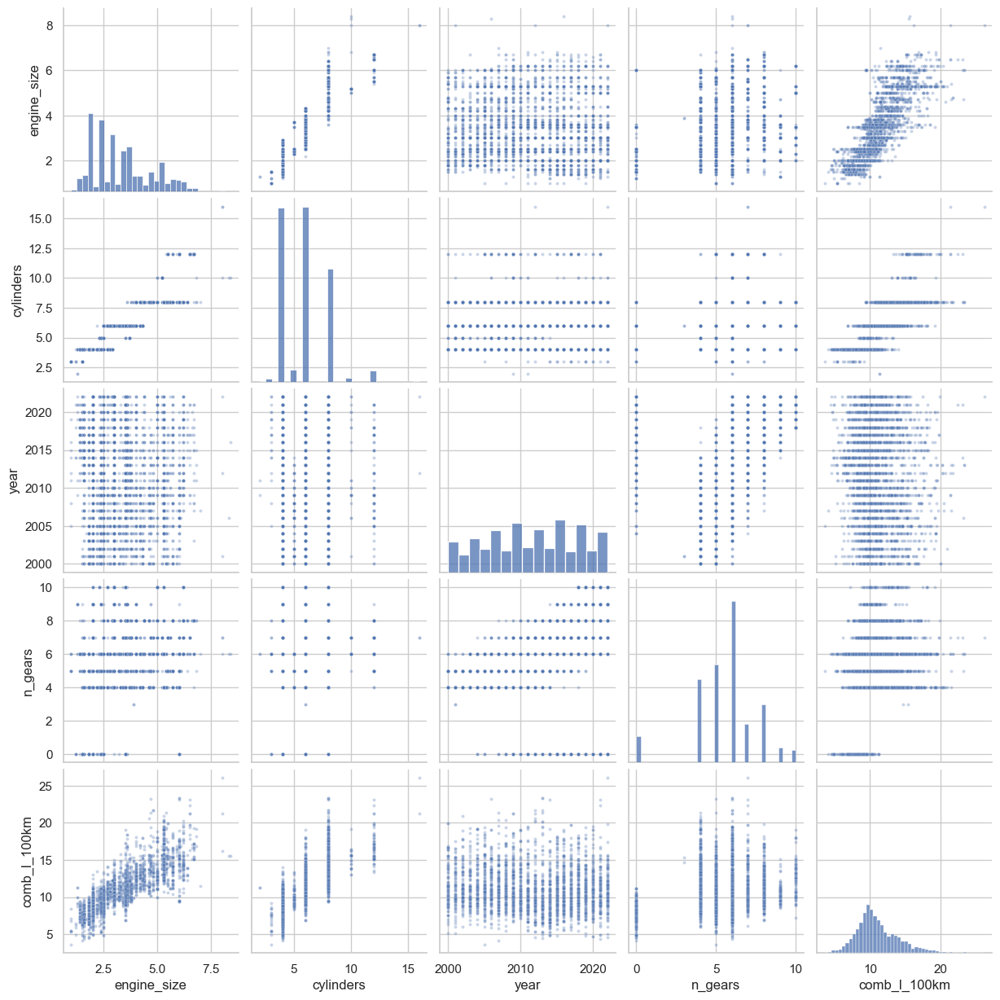
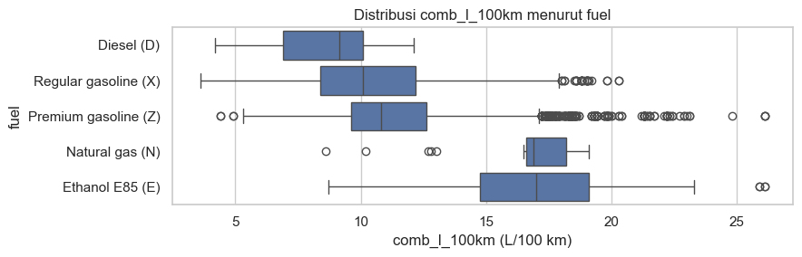
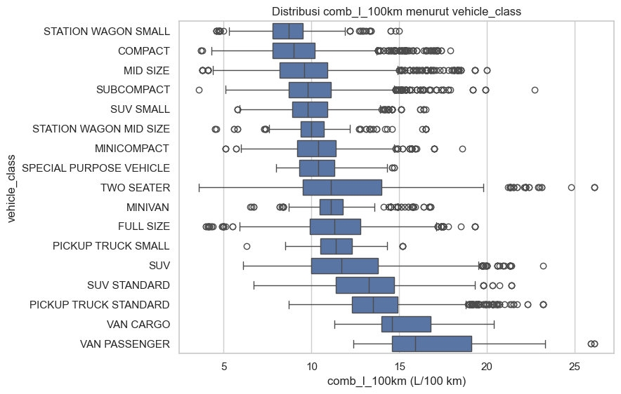
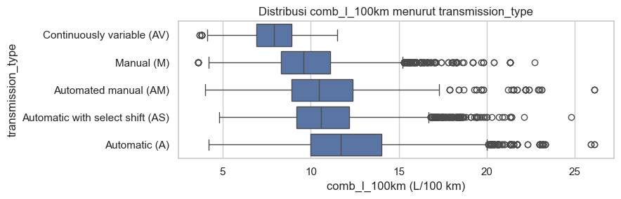
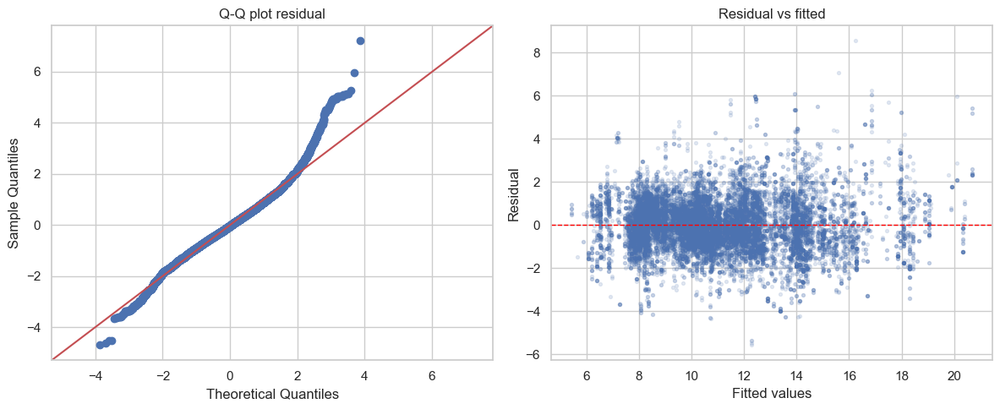
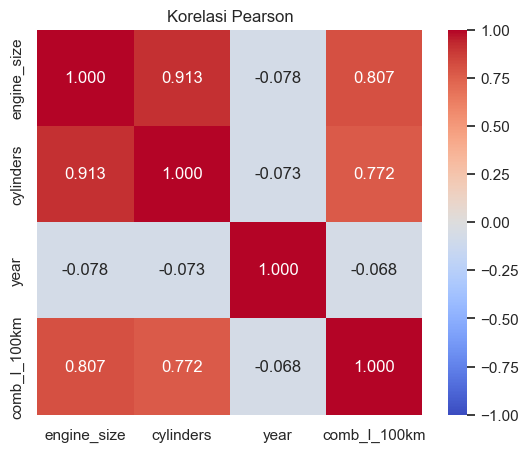
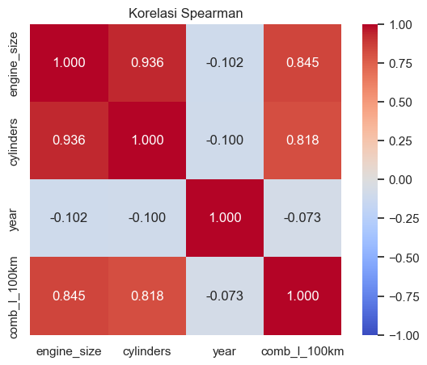

Abstrak: Konsumsi bahan bakar kendaraan berkaitan langsung dengan biaya operasional, emisi, dan kebijakan keberlanjutan, sehingga kemampuan memprediksinya dari spesifikasi teknis memiliki nilai praktis. Penelitian ini memodelkan konsumsi bahan bakar gabungan (comb_l_100km, dalam L/100 km) menggunakan dataset Fuel Consumption 2000–2022 yang berisi 22.555 baris setelah pembersihan. Pendekatan yang dipakai adalah regresi linear berganda dengan one-hot encoding pada variabel kategorikal jenis bahan bakar, kelas kendaraan, dan tipe transmisi, ditambah prediktor numerik ukuran mesin, jumlah silinder, dan jumlah gigi. Tahun model dibuang karena korelasinya dengan respons mendekati nol; jumlah silinder dipertahankan meskipun hampir kolinier dengan ukuran mesin karena uji ablasi menunjukkan ia masih menambah daya prediksi; suku kuadratik ukuran mesin diuji namun tidak menaikkan R-squared uji sehingga model linear yang lebih sederhana dipilih. Model akhir menjelaskan sekitar 84 persen variansi (R-squared uji sekitar 0,84) dengan RMSE uji sekitar 1,18 L/100 km tanpa indikasi overfitting. Penggerak utama adalah jenis bahan bakar, kelas kendaraan, dan ukuran mesin. Uji Breusch-Pagan dan Jarque-Bera menolak homoskedastisitas dan normalitas; penolakan ini wajar pada sampel besar dan tidak membatalkan estimasi titik koefisien. Standard error robust HC3 dipakai agar inferensi tetap sahih terhadap heteroskedastisitas.
Abstract: Vehicle fuel consumption is directly related to operating cost, emissions, and sustainability policy, so predicting it from technical specifications has practical value. This study models combined fuel consumption (comb_l_100km, in L/100 km) using the Fuel Consumption 2000–2022 dataset containing 22,555 rows after cleaning, via multiple linear regression with one-hot encoding on fuel type, vehicle class, and transmission type, plus numeric predictors engine size, cylinder count, and number of gears. Model year is dropped (near-zero correlation); cylinder count is kept despite collinearity with engine size because an ablation test shows it still adds predictive power; a quadratic engine-size term did not raise the test R-squared, so the simpler linear model was chosen. The final model explains about 84 percent of variance (test R-squared about 0.84) with a test RMSE of about 1.18 L/100 km and no overfitting. The main drivers are fuel type, vehicle class, and engine size. Breusch-Pagan and Jarque-Bera reject homoscedasticity and normality; these rejections are expected at large samples and do not invalidate the point estimates. HC3 robust standard errors keep inference valid under heteroscedasticity.
Konsumsi bahan bakar kendaraan merupakan indikator yang berhubungan langsung dengan biaya operasional, emisi gas rumah kaca, dan kebijakan keberlanjutan transportasi. Kemampuan memprediksinya dari karakteristik teknis bermanfaat untuk perencanaan armada, perbandingan biaya bagi konsumen, deteksi anomali data spesifikasi, sampai pelaporan keberlanjutan, sehingga pemodelan statistik yang tepat menjadi kebutuhan yang relevan.
Karakteristik kendaraan terdiri atas besaran numerik (ukuran mesin, jumlah silinder, jumlah gigi) dan kategori (jenis bahan bakar, kelas kendaraan, tipe transmisi). Variabel kategori tidak dapat langsung masuk regresi karena berupa label, sehingga perlu diubah menjadi kolom indikator melalui one-hot encoding agar pengaruh tiap kategori diestimasi terpisah terhadap kategori acuan.
Pemodelan ini menghadapi empat tantangan: multikolinieritas antara ukuran mesin dan jumlah silinder; keberadaan prediktor nyaris tak relevan seperti tahun model; kemungkinan kelengkungan hubungan ukuran mesin dengan konsumsi; serta pemenuhan asumsi Ordinary Least Squares (OLS) yang menjadi dasar inferensi. Sesuai itu, penelitian menjawab empat pertanyaan: fitur mana yang dipertahankan, bagaimana kategori diolah tanpa kolinieritas sempurna, apakah model linear memadai atau perlu suku polinomial, dan apakah asumsi OLS terpenuhi serta bagaimana menangani pelanggarannya. Jawabannya disusun melalui kerangka analisis bertahap dari eksplorasi data, seleksi fitur berbasis korelasi, pembentukan model, pemilihan bentuk fungsional, validasi asumsi, hingga penyempurnaan inferensi dengan standard error robust.
Regresi linear berganda memodelkan respons sebagai jumlah konstanta dan kontribusi linear tiap prediktor; koefisiennya menyatakan perubahan rata-rata respons untuk kenaikan satu satuan prediktor dengan prediktor lain ditahan tetap. Model diestimasi dengan kuadrat terkecil yang meminimalkan jumlah kuadrat selisih nilai sebenarnya dan prediksi. Kesederhanaan dan kemudahan interpretasinya menjadikannya titik awal yang wajar (Montgomery dkk., 2012; James dkk., 2013).
One-hot encoding mengubah satu variabel kategori menjadi kolom indikator bernilai nol atau satu. Untuk variabel dengan k kategori dibuat k−1 kolom dan satu kategori menjadi acuan, untuk menghindari dummy variable trap, yaitu kolinieritas sempurna antara kolom indikator dan konstanta. Koefisien tiap indikator dibaca sebagai selisih rata-rata respons kategori tersebut terhadap acuan (James dkk., 2013).
Korelasi Pearson mengukur kekuatan hubungan linear, sedangkan Spearman mengukur hubungan monoton karena dihitung pada peringkat sehingga lebih tahan pencilan dan tidak mengandaikan bentuk lurus (Spearman, 1904). Bila Spearman jauh lebih besar daripada Pearson, ada kelengkungan monoton yang membuat Pearson meremehkan hubungan; bila keduanya berdekatan, hubungan monotonnya nyaris lurus sehingga Pearson sah dibaca sebagai kekuatan linear.
Multikolinieritas terjadi ketika dua atau lebih prediktor berkorelasi sangat tinggi, sehingga koefisien menjadi sensitif terhadap perubahan kecil data dan standard error membesar. Namun kolinieritas tidak selalu menurunkan daya prediksi; selama pola korelasi antarprediktor tetap berlaku pada data baru, kedua prediktor dapat dipertahankan apabila terbukti menambah akurasi (Montgomery dkk., 2012).
Inferensi OLS bertumpu pada asumsi error, terutama homoskedastisitas (variansi error konstan) dan normalitas residual. Homoskedastisitas diuji dengan Breusch-Pagan (Breusch & Pagan, 1979) dan normalitas dengan Jarque-Bera (Jarque & Bera, 1980), dilengkapi diagnostik visual Q-Q plot dan plot residual terhadap prediksi. Pada sampel besar kedua uji sangat sensitif sehingga hampir selalu menolak walau penyimpangan kecil. Ketika heteroskedastisitas terkonfirmasi, estimasi titik tetap tidak bias namun standard error klasik keliru; solusinya standard error robust, dengan varian HC3 yang paling konservatif sebagai pilihan default (MacKinnon & White, 1985).
Penelitian menggunakan dataset publik Fuel Consumption 2000–2022 (Yilmaz, n.d.) yang memuat 22.556 baris dan 13 kolom spesifikasi kendaraan. Respons adalah konsumsi bahan bakar gabungan comb_l_100km dari kolom COMB (L/100 km). Prediktor numerik yang dipertimbangkan: ukuran mesin (liter), jumlah silinder, tahun model, dan jumlah gigi. Prediktor kategori: jenis bahan bakar, kelas kendaraan, dan tipe transmisi.
Data mentah tidak memuat nilai hilang sehingga tidak diperlukan imputasi. Satu baris duplikat persis dihapus karena produsen kerap mencatat konfigurasi trim identik sebagai baris tersendiri, menyisakan 22.555 baris efektif. Label kelas kendaraan dirapikan karena memuat penulisan berbeda untuk makna sama (mis. "SUV - SMALL" dan "SUV: Small"), sehingga jumlah kelas menyusut dari 32 menjadi 17. Kolom transmisi dipecah menjadi tipe transmisi dan jumlah gigi; transmisi variabel kontinu (CVT) tidak memiliki gigi tetap sehingga jumlah giginya ditetapkan nol sebagai konvensi.
Analisis dilakukan dalam lima tahap: (1) eksplorasi data — memetakan peran kolom, meringkas distribusi, memeriksa pola lewat pair plot dan boxplot; (2) seleksi fitur — menilai korelasi prediktor terhadap respons dan antarprediktor; (3) pembentukan model — one-hot encoding, pembagian latih/uji, dan perbandingan model linear vs polinomial; (4) validasi asumsi — Breusch-Pagan dan Jarque-Bera dengan diagnostik visual; (5) penyempurnaan inferensi — standard error robust HC3 dan pelaporan koefisien beserta selang kepercayaan.
Prediktor dinilai dari kekuatan korelasi dengan respons dan tingkat kolinieritas dengan prediktor lain. Prediktor dengan korelasi marginal yang dapat diabaikan menjadi kandidat dibuang. Untuk prediktor yang saling kolinier, keputusan tidak hanya berdasar korelasi tetapi juga uji ablasi pada data uji, yang membandingkan model lengkap dengan model tanpa prediktor tertentu untuk menilai apakah ia benar-benar menambah daya prediksi.
Data dibagi latih/uji 80:20 dengan random state tetap demi reproduktibilitas (latih 18.044 baris, uji 4.511 baris). Subset uji ditahan dan hanya dipakai menilai generalisasi. Model diestimasi dengan OLS memakai pustaka Python pandas (McKinney, 2010), statsmodels (Seabold & Perktold, 2010), dan scikit-learn (Pedregosa dkk., 2011). Kualitas prediksi diukur dengan R-squared, RMSE, dan MAE; RMSE dan MAE dinyatakan dalam satuan asli L/100 km.
Tabel 1 menyajikan statistik deskriptif variabel numerik. Ukuran mesin berkisar 0,8–8,4 liter dengan median 3,0 liter, jumlah silinder terpusat pada 4/6/8, dan tahun model tersebar merata 2000–2022. Respons condong ke kanan dengan mayoritas kendaraan pada 9–13 L/100 km dan ekor tipis melampaui 20 L/100 km. Pada komposisi kategori, Regular dan Premium gasoline mendominasi (11.822 dan 9.315 kendaraan) sedangkan Diesel dan Natural gas langka (314 dan 33); kelas Compact, Mid size, dan SUV paling sering muncul; transmisi otomatis paling banyak (8.690).
| Variabel | Mean | Std | Min | Q1 | Median | Q3 | Max |
|---|---|---|---|---|---|---|---|
| Ukuran mesin (L) | 3,357 | 1,335 | 0,8 | 2,3 | 3,0 | 4,2 | 8,4 |
| Jumlah silinder | 5,854 | 1,820 | 2 | 4 | 6 | 8 | 16 |
| Tahun model | 2011,6 | 6,298 | 2000 | 2006 | 2012 | 2017 | 2022 |
| Jumlah gigi | 5,635 | 1,957 | 0 | 5 | 6 | 6 | 10 |
| comb_l_100km | 11,034 | 2,911 | 3,6 | 9,1 | 10,6 | 12,7 | 26,1 |
Pair plot (Gambar 1) memperlihatkan pola menanjak yang jelas antara ukuran mesin, jumlah silinder, dan konsumsi; jumlah silinder dan jumlah gigi bernilai diskret sehingga sebarannya membentuk pola vertikal; tahun model hampir datar terhadap konsumsi (korelasi mendekati nol). Hubungan tiap prediktor numerik dengan respons mendekati garis lurus, mendukung pemakaian model linear. Boxplot per kategori (Gambar 2–4) menegaskan ketiga faktor kategori membedakan konsumsi: Diesel paling hemat sedangkan Ethanol E85 dan Natural gas paling boros; kelas kendaraan menanjak dari sedan kecil ke van dan pikap; tipe transmisi berbeda lebih landai namun sistematis. Karena setiap faktor menggeser median konsumsi antar kategori, ketiganya layak masuk model melalui one-hot encoding.




Tabel 2 merangkum korelasi Pearson dan Spearman prediktor numerik terhadap respons serta antara ukuran mesin dan jumlah silinder (matriks lengkap pada Gambar A1–A2 di Lampiran). Putusan diambil dengan membandingkan selang kepercayaan 95 persen koefisien terhadap ambang praktis 0,1, bukan p-value: pada n ≈ 22.555 p-value hampir selalu signifikan karena hanya menanyakan apakah korelasi tepat nol, sehingga tidak dapat membedakan korelasi yang berarti dari yang dapat diabaikan. Selisih Spearman−Pearson kecil dan positif (sekitar 0,04 untuk ukuran mesin dan 0,05 untuk jumlah silinder), menandakan kelengkungan monoton sangat ringan sehingga Pearson tetap sah dibaca sebagai kekuatan linear; temuan ini mendasari pengujian suku kuadratik yang keputusannya diserahkan pada data uji.
| Pasangan | Pearson | Spearman | Putusan |
|---|---|---|---|
| Ukuran mesin terhadap respons | 0,807 | 0,845 | Berarti |
| Jumlah silinder terhadap respons | 0,772 | 0,818 | Berarti |
| Tahun model terhadap respons | -0,068 | -0,073 | Dapat diabaikan |
| Ukuran mesin terhadap jumlah silinder | 0,913 | 0,936 | Kolinier |
Tabel 3 mendokumentasikan keputusan seleksi fitur. Ukuran mesin dipertahankan karena paling kuat berhubungan dengan respons; jumlah silinder dipertahankan meski hampir kolinier karena korelasinya bukan sempurna dan uji ablasi (Subbab 4.7) membuktikan ia menambah daya prediksi; tahun model dibuang karena korelasinya dapat diabaikan; jumlah gigi dan ketiga variabel kategori dipertahankan karena boxplot menunjukkan kaitan sistematis dengan konsumsi.
| Prediktor | Keputusan | Alasan ringkas |
|---|---|---|
| Ukuran mesin | Pertahankan | Korelasi paling kuat dengan respons |
| Jumlah silinder | Pertahankan | Kolinier, namun terbukti menambah prediksi (ablasi) |
| Tahun model | Buang | Korelasi dengan respons dapat diabaikan |
| Jumlah gigi | Pertahankan | Transmisi berkaitan dengan konsumsi |
| Jenis bahan bakar | Pertahankan | Median konsumsi bergeser antar kategori |
| Kelas kendaraan | Pertahankan | Median konsumsi bergeser antar kategori |
| Tipe transmisi | Pertahankan | Median konsumsi bergeser antar kategori |
Variabel kategori diubah menjadi kolom indikator dengan acuan Diesel (bahan bakar), Compact (kelas), dan transmisi otomatis (transmisi), menghasilkan 24 kolom indikator. Bersama tiga prediktor numerik, model linear memakai 27 fitur ditambah satu konstanta. Karena perbandingan Pearson–Spearman menandai kelengkungan kecil pada ukuran mesin, model linear dibandingkan dengan model polinomial bersuku kuadratik ukuran mesin. Tabel 4 menunjukkan pada data uji keduanya praktis setara padahal polinomial memakai satu parameter lebih banyak, sehingga model linear yang lebih sederhana dipilih sesuai prinsip parsimoni.
| Model | Jumlah parameter | R-squared latih | R-squared uji |
|---|---|---|---|
| Linear | 28 | 0,8342 | 0,8365 |
| Polinomial (ukuran mesin kuadratik) | 29 | 0,8344 | 0,8364 |
Tabel 5 menyajikan koefisien model linear final beserta standard error, p-value, dan selang kepercayaan 95 persen, seluruhnya berbasis kovarians robust HC3 (Subbab 4.6). Koefisien numerik dibaca sebagai perubahan konsumsi per kenaikan satu satuan prediktor; koefisien kategori sebagai selisih konsumsi terhadap kategori acuan; konstanta mewakili kategori acuan saat prediktor numerik nol dan tidak ditafsir harfiah karena di luar rentang data. Ukuran mesin dan jumlah silinder positif (dibaca bersama sebagai ukuran kapasitas mesin), jumlah gigi negatif (lebih banyak rasio cenderung sedikit lebih hemat), Diesel paling hemat sedangkan Ethanol E85 paling boros, transmisi variabel kontinu paling hemat, dan kelas kendaraan menunjukkan gradien jelas dari mobil kecil ke van/pikap. Kelas Full size dan Mid size tidak signifikan (p besar), berarti konsumsinya tidak berbeda nyata dari acuan Compact.
| Variabel | Koef. | SE (HC3) | p | CI bawah | CI atas |
|---|---|---|---|---|---|
| Konstanta | 3,1407 | 0,0868 | <0,001 | 2,971 | 3,311 |
| Ukuran mesin | 0,6438 | 0,0264 | <0,001 | 0,592 | 0,696 |
| Jumlah silinder | 0,5740 | 0,0185 | <0,001 | 0,538 | 0,610 |
| Jumlah gigi | -0,0518 | 0,0075 | <0,001 | -0,066 | -0,037 |
| Bahan bakar: Ethanol E85 (E) | 5,4887 | 0,0758 | <0,001 | 5,340 | 5,637 |
| Bahan bakar: Natural gas (N) | 3,7854 | 0,2542 | <0,001 | 3,287 | 4,284 |
| Bahan bakar: Premium gasoline (Z) | 2,0951 | 0,0574 | <0,001 | 1,983 | 2,208 |
| Bahan bakar: Regular gasoline (X) | 1,4221 | 0,0569 | <0,001 | 1,311 | 1,534 |
| Kelas: Full size | 0,0155 | 0,0435 | 0,721 | -0,070 | 0,101 |
| Kelas: Mid size | 0,0016 | 0,0304 | 0,958 | -0,058 | 0,061 |
| Kelas: Minicompact | -0,1952 | 0,0441 | <0,001 | -0,282 | -0,109 |
| Kelas: Minivan | 1,0503 | 0,0490 | <0,001 | 0,954 | 1,147 |
| Kelas: Pickup truck small | 2,0659 | 0,0553 | <0,001 | 1,958 | 2,174 |
| Kelas: Pickup truck standard | 1,9945 | 0,0431 | <0,001 | 1,910 | 2,079 |
| Kelas: Special purpose vehicle | 1,9189 | 0,0911 | <0,001 | 1,740 | 2,098 |
| Kelas: Station wagon mid size | 0,5699 | 0,0469 | <0,001 | 0,478 | 0,662 |
| Kelas: Station wagon small | 0,3136 | 0,0406 | <0,001 | 0,234 | 0,393 |
| Kelas: Subcompact | 0,0939 | 0,0359 | 0,009 | 0,024 | 0,164 |
| Kelas: SUV | 1,5188 | 0,0365 | <0,001 | 1,447 | 1,590 |
| Kelas: SUV small | 1,3675 | 0,0364 | <0,001 | 1,296 | 1,439 |
| Kelas: SUV standard | 1,7452 | 0,0527 | <0,001 | 1,642 | 1,848 |
| Kelas: Two seater | 0,4444 | 0,0598 | <0,001 | 0,327 | 0,562 |
| Kelas: Van cargo | 2,6157 | 0,0718 | <0,001 | 2,475 | 2,757 |
| Kelas: Van passenger | 3,9195 | 0,1053 | <0,001 | 3,713 | 4,126 |
| Transmisi: Automated manual (AM) | 0,4672 | 0,0573 | <0,001 | 0,355 | 0,580 |
| Transmisi: Automatic select shift (AS) | 0,1310 | 0,0224 | <0,001 | 0,087 | 0,175 |
| Transmisi: Continuously variable (AV) | -1,6222 | 0,0646 | <0,001 | -1,749 | -1,496 |
| Transmisi: Manual (M) | 0,1623 | 0,0253 | <0,001 | 0,113 | 0,212 |
Validasi dilakukan pada homoskedastisitas dan normalitas; independensi tidak diuji formal karena data cross-sectional sehingga urutan baris tidak bermakna. Tabel 6 merangkum hasil uji formal dan magnitudo penyimpangan. Breusch-Pagan menolak homoskedastisitas dan Jarque-Bera menolak normalitas, namun wajar pada sampel besar; karena itu pembacaan dilengkapi magnitudo (skewness, excess kurtosis, dan proporsi variansi residual kuadrat yang dijelaskan prediktor). Diagnostik visual (Gambar 5) memperkuatnya: Q-Q plot mengikuti garis 45 derajat di bagian tengah dengan penyimpangan di ekor, dan plot residual terhadap prediksi sedikit melebar seperti corong (heteroskedastisitas) tanpa lengkungan sistematis sehingga spesifikasi linear memadai.
| Aspek | Uji dan magnitudo | Pembacaan |
|---|---|---|
| Homoskedastisitas | Breusch-Pagan, R-squared auxiliary = 0,083 | Heteroskedastik ringan–sedang |
| Normalitas (kemiringan) | Skewness = 0,42 | Kemiringan dapat diabaikan |
| Normalitas (ekor) | Excess kurtosis = 2,14 | Ekor lebih tebal dari normal |

Karena heteroskedastisitas terkonfirmasi, standard error klasik diganti dengan standard error robust HC3. Penggantian ini tidak mengubah estimasi titik sama sekali, hanya memperbaiki ukuran ketidakpastian. Tabel 7 menunjukkan standard error ukuran mesin dan jumlah silinder naik sekitar 40 persen sedangkan sebagian koefisien bahan bakar justru turun, bukti langsung bahwa standard error klasik kurang tepat saat heteroskedastik. Varian HC3 dipilih karena paling konservatif, dan pada sampel besar selisih antar varian HC hampir nol sehingga memilih yang teraman tidak merugikan.
| Koefisien | SE klasik | SE HC3 | Rasio HC3/klasik |
|---|---|---|---|
| Ukuran mesin | 0,0185 | 0,0264 | 1,43 |
| Jumlah silinder | 0,0131 | 0,0185 | 1,41 |
| Bahan bakar: Premium gasoline (Z) | 0,0782 | 0,0574 | 0,73 |
| Kelas: Van passenger | 0,0859 | 0,1053 | 1,23 |
Uji ablasi menegaskan dua keputusan seleksi fitur. Membuang jumlah silinder menurunkan R-squared uji sekitar 0,02 (dari 0,8365 menjadi 0,8168); penurunan konsisten pada data uji menandakan informasi nyata, bukan overfitting. Sebaliknya, menambahkan kembali tahun model praktis tidak mengubah R-squared uji dan koefisiennya tidak signifikan (p ≈ 0,852). Tabel 8 menunjukkan selisih metrik latih–uji sangat kecil sehingga tidak ada indikasi overfitting; RMSE uji sekitar 1,18 L/100 km dan MAE uji sekitar 0,89 L/100 km berarti prediksi tipikal meleset sekitar satu liter per 100 km. Secara keseluruhan model menjelaskan sekitar 84 persen variansi; sisanya berasal dari faktor tak dimodelkan seperti bobot kendaraan, aerodinamika, dan jenis penggerak.
| Metrik | Latih | Uji | Selisih (latih−uji) |
|---|---|---|---|
| R-squared | 0,8342 | 0,8365 | -0,0023 |
| RMSE (L/100 km) | 1,1857 | 1,1757 | 0,0101 |
| MAE (L/100 km) | 0,8962 | 0,8941 | 0,0020 |
Penelitian memodelkan konsumsi bahan bakar gabungan kendaraan dengan regresi linear berganda dan one-hot encoding melalui kerangka analisis bertahap. Seleksi fitur mempertahankan ukuran mesin, jumlah silinder, dan jumlah gigi sebagai prediktor numerik serta jenis bahan bakar, kelas kendaraan, dan tipe transmisi sebagai kategori. Tahun model dibuang karena korelasinya dapat diabaikan; jumlah silinder dipertahankan karena ablasi membuktikan ia menambah akurasi meski kolinier; suku kuadratik tidak diperlukan karena tidak menaikkan R-squared uji. Model akhir menjelaskan sekitar 84 persen variansi dengan RMSE uji sekitar 1,18 L/100 km tanpa overfitting, dengan penggerak utama jenis bahan bakar, kelas kendaraan, dan ukuran mesin.
Keterbatasan: Breusch-Pagan dan Jarque-Bera menolak homoskedastisitas dan normalitas, wajar pada sampel besar dan tidak membatalkan estimasi titik; standard error robust HC3 sudah menangani heteroskedastisitas sehingga p-value dan selang kepercayaan dapat ditafsirkan sebagaimana mestinya. Non-normalitas berekor tebal tidak fatal bagi prediksi titik berkat Central Limit Theorem namun membuat interval prediksi kurang terkalibrasi di ekor. Independensi tidak diuji sehingga kemungkinan korelasi dalam grup antar varian dari model kendaraan yang sama masih terbuka; model bersifat asosiatif, bukan kausal. Untuk penelitian lanjutan disarankan menambahkan prediktor seperti bobot kendaraan dan aerodinamika, menerapkan standard error berbasis cluster per model kendaraan, dan mengeksplorasi metode interval prediksi yang lebih terkalibrasi pada data berekor tebal.
Penulis berterima kasih kepada dosen pengampu mata kuliah Probabilitas dan Statistika atas bimbingannya, serta kepada penyedia dataset publik Fuel Consumption 2000–2022 yang memungkinkan analisis ini.
Breusch, T. S., & Pagan, A. R. (1979). A simple test for heteroscedasticity and random coefficient variation. Econometrica, 47(5), 1287–1294.
James, G., Witten, D., Hastie, T., & Tibshirani, R. (2013). An introduction to statistical learning with applications in R. Springer.
Jarque, C. M., & Bera, A. K. (1980). Efficient tests for normality, homoscedasticity and serial independence of regression residuals. Economics Letters, 6(3), 255–259.
MacKinnon, J. G., & White, H. (1985). Some heteroskedasticity-consistent covariance matrix estimators with improved finite sample properties. Journal of Econometrics, 29(3), 305–325.
McKinney, W. (2010). Data structures for statistical computing in Python. Proceedings of the 9th Python in Science Conference, 56–61.
Montgomery, D. C., Peck, E. A., & Vining, G. G. (2012). Introduction to linear regression analysis (5th ed.). John Wiley & Sons.
Pedregosa, F., Varoquaux, G., Gramfort, A., Michel, V., Thirion, B., Grisel, O., … Duchesnay, É. (2011). Scikit-learn: Machine learning in Python. Journal of Machine Learning Research, 12, 2825–2830.
Seabold, S., & Perktold, J. (2010). Statsmodels: Econometric and statistical modeling with Python. Proceedings of the 9th Python in Science Conference, 92–96.
Spearman, C. (1904). The proof and measurement of association between two things. The American Journal of Psychology, 15(1), 72–101.
Yilmaz, A. (n.d.). Fuel consumption (2000–2022) [Data set]. Kaggle. Diakses 7 Juni 2026, dari https://www.kaggle.com/datasets/ahmettyilmazz/fuel-consumption
Matriks korelasi berikut menyajikan nilai yang telah diringkas pada Tabel 2.

